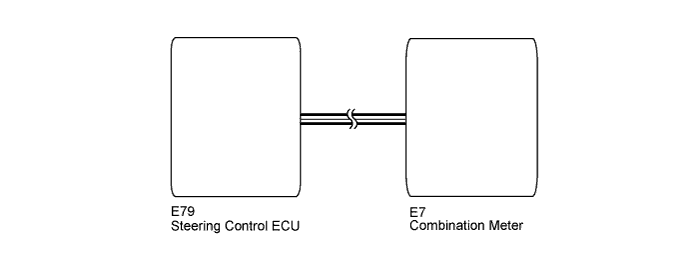

VARIABLE GEAR RATIO STEERING SYSTEM > Master Warning Light Malfunction |

| 1.CHECK BATTERY |
Measure the voltage according to the value(s) in the table below.
| Tester Connection | Condition | Specified Condition |
| Positive (+) battery terminal - negative (-) battery terminal | Always | 11 to 14 V |
|
| ||||
| OK | |
| 2.PERFORM ACTIVE TEST USING INTELLIGENT TESTER (COMBINATION METER) |
Select the Active Test, use the intelligent tester to generate a control command, and then check that the master warning light turns on/off.
| Tester Display | Test Part | Control Range | Diagnostic Note |
| Master Warning | Master warning light | OFF/ON | Confirm that the vehicle is stopped and the engine is running |
| Result Result | Proceed to |
| NG | A |
| OK (for LHD) | B |
| OK (for RHD) | C |
|
| ||||
|
| ||||
| A | ||
| ||